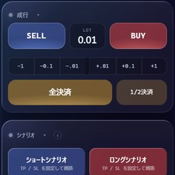
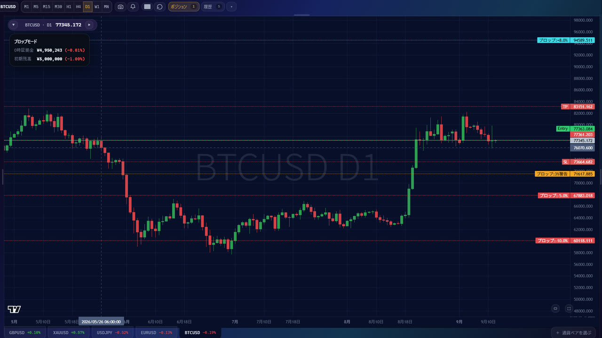
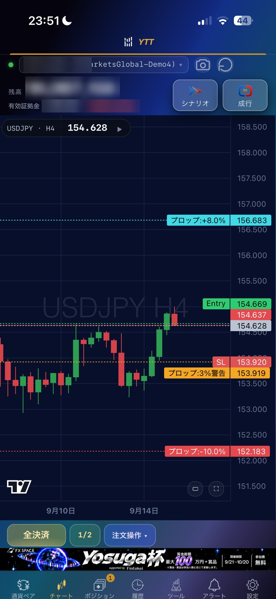

シナリオ（TP/SL）
エントリーと同時に、利確（TP）と損切り（SL）を置けます。
予約注文
「この価格まで来たらエントリー」を、あらかじめ予約しておけます。
押し目
「いったんこの価格まで来てから」という条件をつけられます。
エントリートリガー
決めた条件がそろった瞬間に、自動でエントリーします。
よすがが独自に開発したトレード支援ツール。
Web版なら、スマホでもPCでもブラウザから
 Web版 機能概要
Web版 機能概要


スマホでもPCでも、ブラウザからYTTが使えます。
スマホでも有利なカスタマイズトレードが可能に
Web版YTTは、MT4 / MT5 / cTrader に連携ツールを入れておけば、ブラウザから注文・決済までできます。

 注文・決済シナリオ構築・予約注文オートラインコピーモード通知・トレードノート経済指標表示 ほか
注文・決済シナリオ構築・予約注文オートラインコピーモード通知・トレードノート経済指標表示 ほか詳しい機能は、Web版YTTの使い方ページで紹介しています。
どちらもスタンダード・プレミアムプランで使えます。

Web版YTT
スマホでもパソコンでも、
こんな人に
やりたいことから
Web版YTTの実際の画面で紹介します。
シナリオ（TP/SL）
エントリーと同時に、利確（TP）と損切り（SL）を置けます。
予約注文
「この価格まで来たらエントリー」を、あらかじめ予約しておけます。
押し目
「いったんこの価格まで来てから」という条件をつけられます。
エントリートリガー
決めた条件がそろった瞬間に、自動でエントリーします。
ロットの決め方
1回の損失を「残高の○%」か「○円」に決めておくと、SLまでの幅に合わせて、ロットが自動で決まります。
オートライン
大事な水平線・トレンドライン・チャネルラインを、自動でチャートに引いてくれます。線の色は時間足ごとに分かれています。
通知ライン
チャートに置いた線に価格が来たら、スマホにお知らせが届きます。
プロップモード
合格ライン・失格ラインをチャートに出し、SLが1日の損失の上限を超えないように、自動で動かします。


他にもこんな機能が
コピー・取引の振り返り・損益の固定まで、
動作環境
Web版YTTはスマホ・PCのブラウザで使います。
注文を出す取引ツール側の環境もあわせて確認してください。
| 開く端末 | スマホ（iPhone / Android）・PC のブラウザ | スマホは、Androidなら「インストール」、iPhoneなら「ホーム画面に追加」して使うのがおすすめ |
|---|---|---|
| 取引ツール | MT4 / MT5 / cTrader / cTrader Cloud | Web版YTTとつなぐ連携ツールを入れます（1口座につき1つ） |
| 利用中のPC | 起動したまま | MT4 / MT5 / cTrader は、PCのスリープや終了で止まります。cTrader Cloud版はPCを閉じてもOK |
| 通信環境 | 安定した高速インターネット回線 | |
| 使用可能者 | メンバーシップ or サブスク加入者 | |
| 証券会社・プロップ | HFM、Axiory、ThreeTrader、Fundora、Fintokei、Funded7、楽天証券 | 他の証券会社・プロップファームでの動作はテストしていません |
取引ツールを動かすPCの目安
| OS | Windows 10 / 11（64-bit） | macOSは対応していますが、Wine等での動作になり制限が出る可能性があるため基本はWindows推奨 |
|---|---|---|
| CPU | Intel Core i3 / i5 以上（2GHz以上） | 複数チャートにはクアッドコア推奨 |
| メモリ（RAM） | 8GB以上（16GBあるとさらに安定） | 4GBで動くが、他ソフトとの併用を考えると8GB以上が快適 |
| ストレージ | SSD 256GB以上（空き容量50GB以上推奨） | HDDよりもSSDが高速・低遅延 |
 ご利用プラン
ご利用プラン

下のどちらのプランでもYTTが使えるようになります。
速攻プロフローチャートプロの思考順序をフローチャートで可視化したガイドです。AIサポートFX SPACEに関する疑問に24時間いつでも答えてくれるAIアシスタント。気軽に相談できます。毎日のシナリオ動画毎朝、よすががその日のシナリオを動画で解説。スタンダードでは主要3通貨ペアの分析が届きます。深掘解説等の限定動画会員限定の特別解説動画。テーマ別に基礎から応用まで深く学べます。3か月プロ企画 ゼロプロ90参加権90日間でゼロからプロを目指す集中プログラム。3か月に1回の募集タイミングで参加できます。プロトレーダー ASTROプロトレーダーASTROの相場観・分析にアクセス可能。実践的な視点を学べます。プロに相談困ったときにプロトレーダーに直接相談できる窓口。学習や実トレードの疑問をすぐ解消できます。スタンダードの全機能上記スタンダードプランの全機能をそのまま利用できます。基礎から実践まで全てカバー。ライブチャート分析よすががチャンスと感じた相場をリアルタイム通知。プレミアム会員だけが見られる専用チャンネル。トレード交流メンバー同士でトレードを共有・議論する場。利確・損切報告で切磋琢磨できます。YouTubeメンバーシップに
YouTubeメンバーシップでも
接続がまだの方はこちら
接続ガイドを見る →サブスクは不要、YTTだけ必要な方へ
 月額費用なし・ずっと使える最新アップデートも無料で更新AIサポート1年間つき
よくある質問
月額費用なし・ずっと使える最新アップデートも無料で更新AIサポート1年間つき
よくある質問
迷ったらWeb版YTTがおすすめです。スマホでもパソコンでも、ブラウザから使えます。パソコンのMT4・MT5・cTraderに入れて使うデスクトップ版YTTも、これまでどおり使えます。どちらもスタンダード・プレミアムプランでご利用いただけます。
デスクトップ版YTTのダウンロード・導入方法はこちら
はい。Web版YTTは、スマホ（iPhone / Android）でもPCでも、ブラウザから使えます。スマホは、Androidなら「インストール」、iPhoneなら「ホーム画面に追加」して、アプリのように使うのがおすすめです。導入方法を見る →
注文を実際に出すのは、取引ツールに入れたレシーバーEAです。MT4 / MT5 / cTrader を使う場合は、利用中はPCと取引ツールを起動したままにしてください（PCがスリープ中は動きません）。cTrader Cloud版なら、PCを閉じても動きます。
ツールだけ使えれば十分なら買い切りがおすすめ。月額なしでずっと使え、アップデートの更新も無料、AIサポートも1年間ついてきます。毎日のシナリオ動画やライブチャート分析、コミュニティで学びながら使いたいならサブスク（スタンダード／プレミアム）が向いています。
もっとも安定して全機能が使えるMT4を推奨しています。MT5・cTraderは基本機能のみの対応で、特にMT5は環境によって動作が重くなることがあります。PCを閉じても動かしたい場合は、cTrader Cloud版も使えます。
次のいずれかが原因のことが多いです。ひとつずつ確認してみてください。
①認証コード（32文字）の入力ミス（前後の空白、全角・半角の混在）
②レシーバーを複数のチャートに入れている（1つのチャートだけに入れます）
③自動売買の許可
④DLLの使用許可
⑤取引ツールの再起動
⑥メンバーシップ／サブスクの加入状況
⑦DiscordとYouTubeの連携
ほかの症状は導入方法ページの「よくある質問」にまとめています。解決しないときはAIサポートもしくはYTTサポートをご利用ください。
はい。24時間無料でお試しできます。サブスク加入前に全機能を1日じっくり試せるので、自分に合うか確かめてから決められます。お試しを始める →
サブスクはいつでも解約でき、追加費用はかかりません。スタンダード⇄プレミアムはプラン加入と同時に自動で切り替わるので二重払いの心配もありません。買い切りは解約不要で、購入後はずっとお使いいただけます。
困ったときは
導入や使い方で迷っても、ここから解決できます。
 Web版YTTを体験してみよう
Web版YTTを体験してみよう